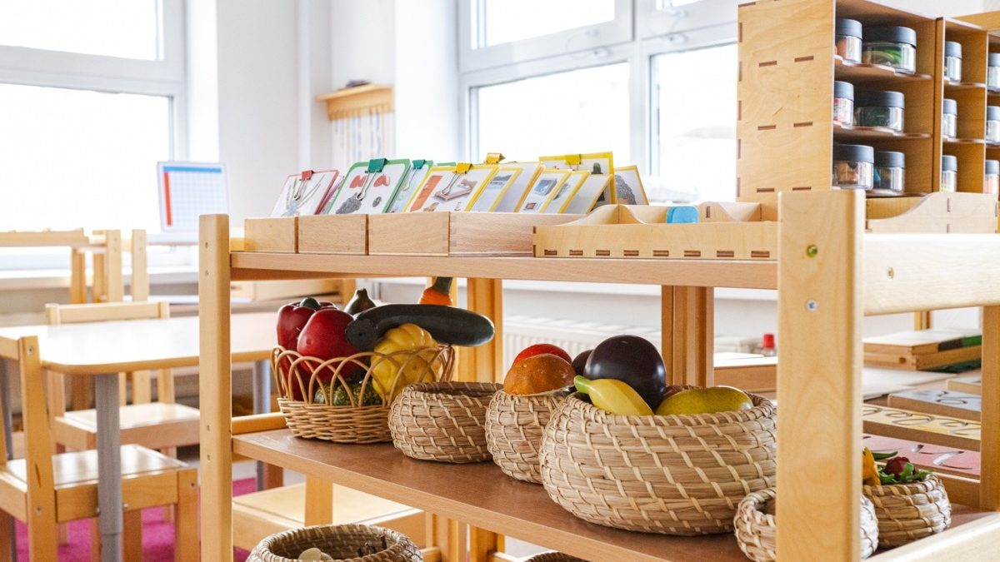
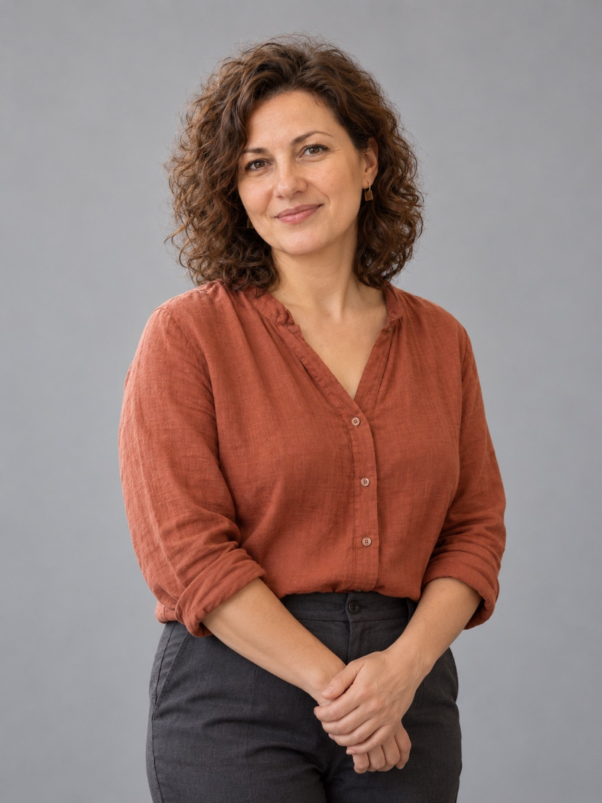
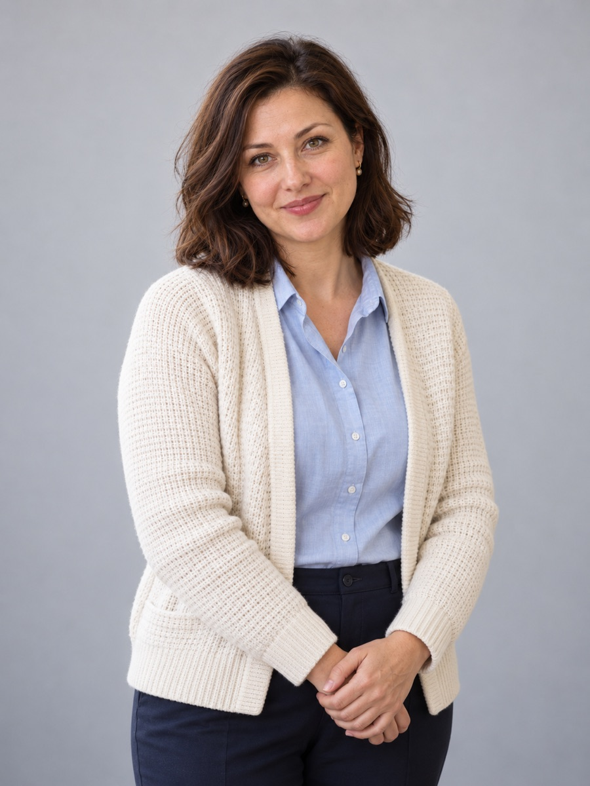
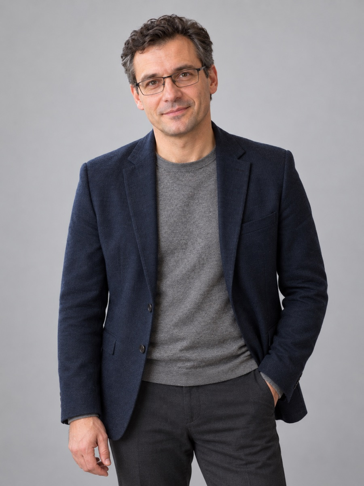

Кто такой тьютор и зачем он ребёнку в частной школе
Чем тьютор отличается от учителя, репетитора и психолога, что делает каждый день, как помогает при адаптации, отставании и выборе профиля. Опыт ONE!.
Учитель информатики, руководитель проектов по программированию и цифровой грамотности.
Первые программы создавала для собственных задач: учёта книг и организации мероприятий. Ей нравится превращать расплывчатое пожелание в понятную задачу, а затем – в работающий инструмент.
Хороший цифровой инструмент помогает думать. Пользоваться им осмысленно – тоже навыкСтатьи педагога ↓
2013–2017 годы – бакалавриат по прикладной информатике; 2017–2019 годы – магистратура «Прикладная информатика в образовании». Профильное подразделение – Институт математики, информатики и естественных наук, позднее Институт цифрового образования.
Начала преподавать в 2018 году, во время магистратуры. Вела занятия по программированию и цифровым проектам. Постепенно расширила работу до цифровой безопасности, проверки информации и осмысленного применения AI.
Информатика в 5–11 классах. Учит формулировать задачу, строить алгоритм, писать и проверять код, организовывать данные и объяснять результат.
Ученики создают небольшие программы и исследуют возможности цифровых инструментов.
Если ты можешь объяснить, как проверил результат, ты уже сделал важную часть работы

Чем тьютор отличается от учителя, репетитора и психолога, что делает каждый день, как помогает при адаптации, отставании и выборе профиля. Опыт ONE!.


